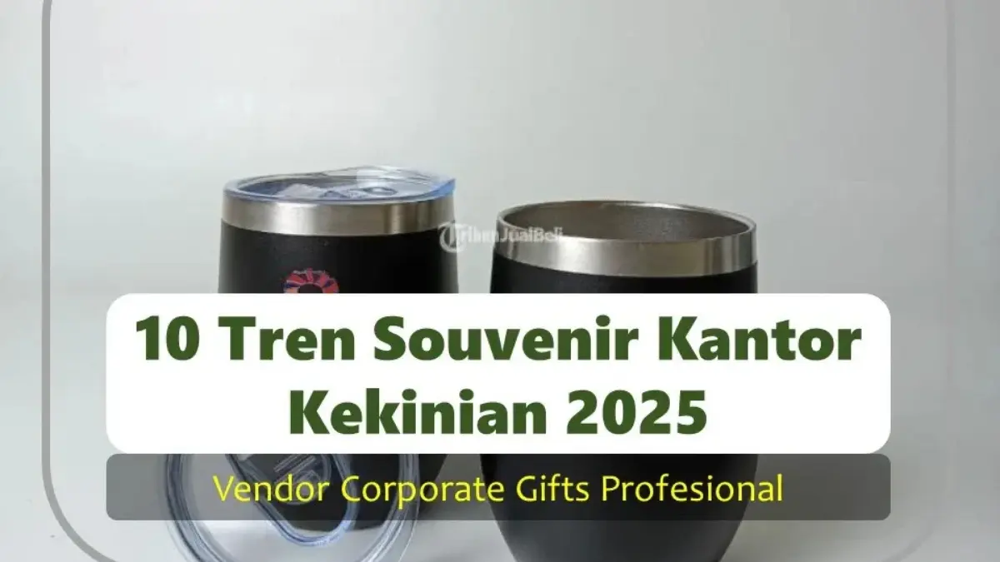

Corporate Gifts ID - Tren souvenir kantor kekinian berfokus pada fungsionalitas, keberlanjutan (sustainability), dan personalisasi digital. Souvenir perusahaan kini bukan sekadar hadiah seremonial, melainkan instrumen strategi branding modern yang mencakup 10 tren utama: mulai dari produk ramah lingkungan (eco-friendly), gadget teknologi pendukung sistem kerja hybrid, hingga barang premium custom eksklusif yang relevan dengan gaya hidup karyawan maupun mitra bisnis.
Dengan semakin kuatnya kepedulian terhadap lingkungan, kemajuan teknologi digital, serta transformasi pola kerja fleksibel, opsi souvenir kantor semakin variatif. Artikel ini mengupas secara komprehensif 10 tren souvenir kantor kekinian yang wajib dipahami tim HR, procurement, dan event organizer agar alokasi anggaran promosi memberikan dampak impresi maksimal.
Poin Kunci Tren Souvenir Kantor Kekinian:
- Keberlanjutan & Ramah Lingkungan: Beralih ke produk eco-friendly (bambu, kanvas katun organik, dan bahan daur ulang) yang selaras dengan misi CSR/ESG perusahaan.
- Teknologi Penunjang Hybrid Work: Tingginya popularitas gadget seperti wireless charging pad, powerbank slim, dan perlengkapan meeting nirkabel.
- Sentuhan Personal & Custom Logo: Peningkatan identitas visual korporat lewat kustomisasi logo presisi menggunakan teknik grafir laser, deboss kulit, dan sablon modern.
- Utilitas Harian Tinggi: Memprioritaskan cinderamata yang dipakai terus-menerus (tumbler termos, buku catatan, payung lipat) untuk menjamin eksposur brand jangka panjang.
1. Souvenir Ramah Lingkungan (Eco-Friendly)
Isu keberlanjutan global mendorong banyak perusahaan terkemuka beralih ke cinderamata ramah lingkungan. Souvenir eco-friendly tidak hanya fungsional, tetapi juga menjadi instrumen nyata yang memperlihatkan kepedulian tulus korporasi terhadap kelestarian bumi.
Contoh Produk Pilihan:
- Tote bag kanvas katun organik bebas pewarna kimia sintetis.
- Tumbler stainless steel food-grade bersertifikasi bebas BPA.
- Pulpen berbahan serat bambu alami dan buku agenda dari kertas daur ulang bersertifikasi FSC.
Alasan Menjadi Tren: Banyak institusi kini mewajibkan implementasi Corporate Social Responsibility (CSR) dan kepatuhan ESG. Membagikan souvenir ramah lingkungan adalah langkah taktis yang sangat efektif dalam memperkuat reputasi brand sebagai entitas bisnis yang beretika dan visioner.
2. Souvenir Digital dan Gadget Teknologi
Di tengah pesatnya adopsi pola kerja fleksibel dan digitalisasi operasional, perangkat teknologi portabel menjadi salah satu kategori souvenir kantor yang paling diminati oleh berbagai level profesional.
Contoh Produk Pilihan:
- Powerbank slim 10.000 mAh bersertifikasi standar keselamatan maskapai penerbangan (IATA).
- Wireless charging pad cepat (fast charging) untuk meja kerja.
- USB flashdisk berbentuk kartu nama tipis berkapasitas besar.
- Earphone bluetooth TWS dengan kualitas mikrofon jernih untuk online meeting.
Alasan Menjadi Tren: Para penerima menghendaki merchandise yang langsung mendukung produktivitas hariannya. Tingkat utilitas yang sangat tinggi memastikan logo brand Anda senantiasa dilihat dan diingat setiap kali perangkat digunakan.
3. Souvenir Custom Logo Perusahaan
Personalisasi visual adalah kunci utama dalam mengoptimalkan brand recall. Logo, tagline, atau ornamen grafis korporasi yang diterapkan dengan teknik cetak presisi akan memberikan impresi yang membekas di benak setiap penerima.
Contoh Produk Pilihan:
- Notebook hardcover custom dengan teknik emboss atau deboss logo korporat.
- Tumbler custom grafir laser dengan paduan warna selaras identitas brand.
- Polo shirt atau jaket windbreaker bordir presisi untuk seragam gathering.
Alasan Menjadi Tren: Perusahaan tidak lagi sekadar membeli barang generik di pasaran bebas. Mereka menginginkan identitas brand terintegrasi secara elegan pada produk fungsional berkualitas tinggi.

Kombinasi notebook kulit custom emboss dan tumbler insulasi grafir logo merupakan paket souvenir terfavorit korporasi modern.
4. Souvenir Eksklusif dan Premium VIP
Ketika berhadapan dengan jajaran direksi, pejabat instansi, atau klien prioritas, cinderamata standar tentu kurang memadai. Souvenir kelas premium hadir sebagai simbol penghargaan prestisius yang bernilai tinggi.
Contoh Produk Pilihan:
- Jam meja kayu jati atau akrilik kristal dengan plat ukiran logam.
- Gift set kulit premium berisi dompet kartu, gantungan kunci, dan lanyard kulit sapi asli.
- Pena metal ballpoint bertinta Jerman yang dikemas dalam kotak beludru magnetik eksklusif.
Alasan Menjadi Tren: Memberikan souvenir premium membuktikan apresiasi mendalam terhadap kontribusi klien. Hadiah berkelas ini memperkuat hubungan diplomatik dan kerja sama bisnis jangka panjang.
5. Souvenir Praktis untuk Kebutuhan Sehari-hari
Barang-barang yang dapat langsung dimanfaatkan dalam rutinitas kerja harian selalu menduduki peringkat teratas preferensi penerima.
Contoh Produk Pilihan:
- Pouch organizer kabel dan aksesoris gadget anti-air.
- Buku agenda planner mingguan untuk memetakan target kerja.
- Payung lipat otomatis dengan lapisan anti-sinar UV.
Alasan Menjadi Tren: Semakin tinggi frekuensi penggunaan produk, semakin konsisten brand perusahaan Anda hadir menemani setiap langkah dan aktivitas penerimanya.
6. Souvenir Health, Wellness, dan Higienitas
Tingginya kepedulian terhadap kesehatan di lingkungan kerja membuat souvenir bertema wellness semakin diminati oleh korporasi yang peduli kesejahteraan karyawannya.
Contoh Produk Pilihan:
- Hand sanitizer spray saku dengan aroma minyak atsiri alami.
- Botol minum anti-bakteri berbahan stainless steel food grade.
- Reed diffuser aromaterapi untuk meja kantor guna mengurangi kejenuhan kerja.
Alasan Menjadi Tren: Memberikan cinderamata kesehatan menunjukkan empati korporasi terhadap kenyamanan fisik dan mental karyawan maupun relasi bisnis.
7. Souvenir Work-from-Home (WFH) dan Hybrid Kit
Sistem kerja remote dan hybrid menuntut perlengkapan kerja mandiri yang andal di rumah. Paket WFH kit menjadi solusi relevan yang sangat diapresiasi oleh tim kerja modern.
Contoh Produk Pilihan:
- Headset dengan fitur noise cancellation untuk panggilan conference virtual.
- Lampu ring light clip-on untuk pencahayaan video call profesional.
- Stand laptop aluminium lipat dengan sudut kemiringan ergonomis.
Alasan Menjadi Tren: Perusahaan berupaya memastikan kualitas produktivitas tim tetap terjaga optimal di mana pun mereka bertugas.
8. Souvenir Acara Hybrid (Hybrid Event Gift)
Banyak konvensi, seminar nasional, dan rapat pemegang saham kini menggabungkan sesi daring dan luring secara simultan. Fenomena ini melahirkan konsep paket souvenir hybrid.
Contoh Produk Pilihan:
- Paket seminar kit yang dikirim langsung ke domisili peserta online.
- Kartu e-money berdesain custom untuk akses praktis transaksi harian.
- Goodie bag multifungsi berbahan spunbond tebal ramah lingkungan.
Alasan Menjadi Tren: Memastikan seluruh peserta, baik yang hadir langsung maupun daring, merasakan tingkat engagement dan perhatian yang setara.
9. Souvenir Lifestyle Kekinian Generasi Milenial dan Gen Z
Tenaga kerja masa kini didominasi oleh generasi muda yang dinamis. Cinderamata yang disukai cenderung mengedepankan sentuhan estetika kontemporer dan gaya hidup aktif.
Contoh Produk Pilihan:
- Tumbler aesthetic dengan finishing cat matte atau gradasi minimalis.
- Tote bag trendy bermotif tipografi inspiratif atau ilustrasi modern.
- Mug keramik keramik berglazur custom ala kedai kopi artisan.
Alasan Menjadi Tren: Produk bergaya hidup modern menciptakan kebanggaan bagi pemakainya sehingga mereka tidak ragu membagikannya di media sosial.
10. Souvenir Edisi Terbatas (Limited Edition)
Eksklusivitas dapat ditingkatkan secara drastis melalui skema rilis souvenir edisi terbatas untuk momentum-momentum krusial korporasi.
Contoh Produk Pilihan:
- Merchandise khusus perayaan hari ulang tahun (anniversary) keemasan institusi.
- Gift set bernomor seri unik untuk peserta konferensi internasional.
- Paket penghargaan karyawan berprestasi tahunan dalam box kemasan magnetik.
Alasan Menjadi Tren: Kolektibilitas tinggi melahirkan rasa bangga dan rasa memiliki (sense of belonging) yang sangat kuat terhadap entitas korporat.
11. Panduan Praktis Memilih Tren Souvenir yang Tepat
Agar investasi pengadaan souvenir menghasilkan dampak branding yang maksimal dan tidak terbuang sia-sia, perhatikan 4 pedoman kurasi berikut:
- Segmentasikan Karakteristik Penerima: Bedakan merchandise untuk karyawan operasional (praktis dan tahan banting), peserta event promosi (ekonomis dengan fungsi harian), serta mitra eksekutif VIP (eksklusif dan elegan).
- Tetapkan Anggaran Realistis: Jangan memaksakan item mewah jika membatasi volume pembagian. Konsultasikan opsi terbaik bersama vendor untuk mendapatkan efisiensi biaya skala massal.
- Selaraskan dengan Pesan Identitas Brand: Pastikan warna, tata letak logo, serta pesan yang disampaikan mencerminkan kredibilitas institusi secara harmonis.
- Pilih Vendor Souvenir Berpengalaman: Bekerjasamalah dengan penyedia yang memiliki portofolio kredibel, garansi penggantian barang cacat, serta komitmen ketepatan waktu produksi.
12. Matriks Komparasi 10 Tren Souvenir Kantor Kekinian
Tabel rangkuman komparatif berikut membantu tim Anda dalam menentukan prioritas jenis souvenir yang paling sesuai dengan kebutuhan kegiatan:
| Kategori Tren | Rekomendasi Item Populer | Target Penerima Utama | Dampak & Nilai Branding |
|---|---|---|---|
| Eco-Friendly | Tote bag katun, pulpen bambu, tumbler stainless | Seluruh karyawan, peserta umum, publik | Mencerminkan nilai kepedulian lingkungan dan program ESG |
| Gadget & Teknologi | Powerbank slim, wireless charger, flashdisk kartu | Profesional muda, pekerja hybrid, mitra kerja | Utilitas harian sangat tinggi, citra brand modern |
| Custom Logo Presisi | Notebook emboss, tumbler grafir, jaket bordir | Internal perusahaan, peserta seminar B2B | Memperkuat identitas korporat dan retensi memori brand |
| VIP & Eksekutif | Gift set kulit asli, jam meja kristal, pena metal | Klien prioritas, jajaran direksi, narasumber VIP | Simbol prestise tinggi dan perekat loyalitas kemitraan |
| Praktis Sehari-hari | Cable organizer, agenda planner, payung lipat | Karyawan kantor, peserta pameran bisnis | Frekuensi paparan visual logo brand sangat intens |
| Health & Wellness | Hand sanitizer spray, botol anti-bakteri, diffuser | Tim operasional, peserta gathering internal | Memperlihatkan kepedulian nyata pada kenyamanan kerja |
| WFH & Hybrid Kit | Headset TWS, ring light mini, stand laptop lipat | Karyawan remote, peserta pelatihan virtual | Mendukung efektivitas kerja fleksibel era modern |
| Hybrid Event Gift | Paket seminar kit pos, kartu e-money custom | Peserta konvensi luring dan peserta online | Menciptakan kesetaraan pengalaman acara secara menyeluruh |
| Lifestyle Kekinian | Tumbler warna pastel, mug keramik kopi, tote bag | Generasi Milenial, Gen Z, komunitas muda | Mendorong publikasi sukarela di media sosial pribadi |
| Limited Edition | Merchandise anniversary, gift set nomor seri | Pemenang apresiasi tahunan, tamu kehormatan | Menciptakan nilai koleksi eksklusif yang tak terlupakan |
Pertanyaan Seputar Souvenir Kantor Kekinian (FAQ)

Ditulis oleh: Arinda Zakia
Senior Corporate Gifting SpecialistPraktisi pengadaan cenderamata korporat dan konsultan gift set B2B di CorporateGifts.ID dengan spesialisasi kurasi hampers VIP mewah, pemilihan merchandise fungsional, dan strategi kemitraan eksekutif.
Lihat Profil Lengkap & Panduan Lainnya